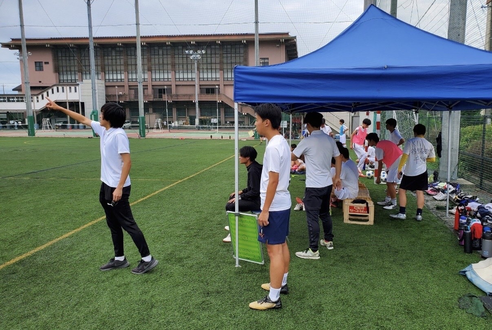
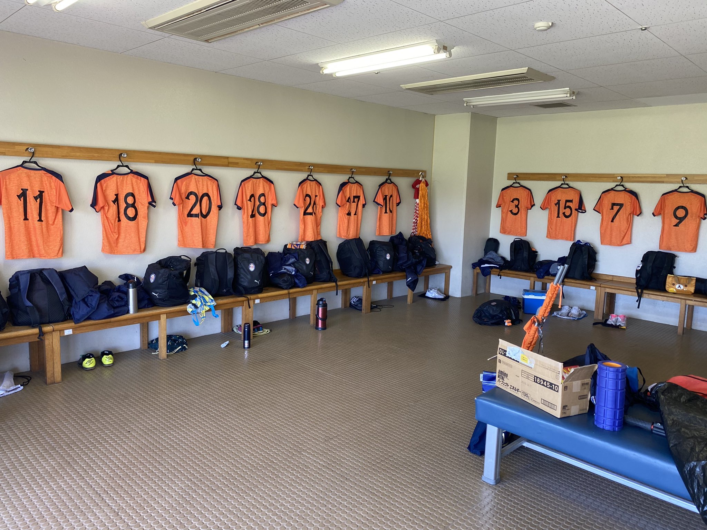
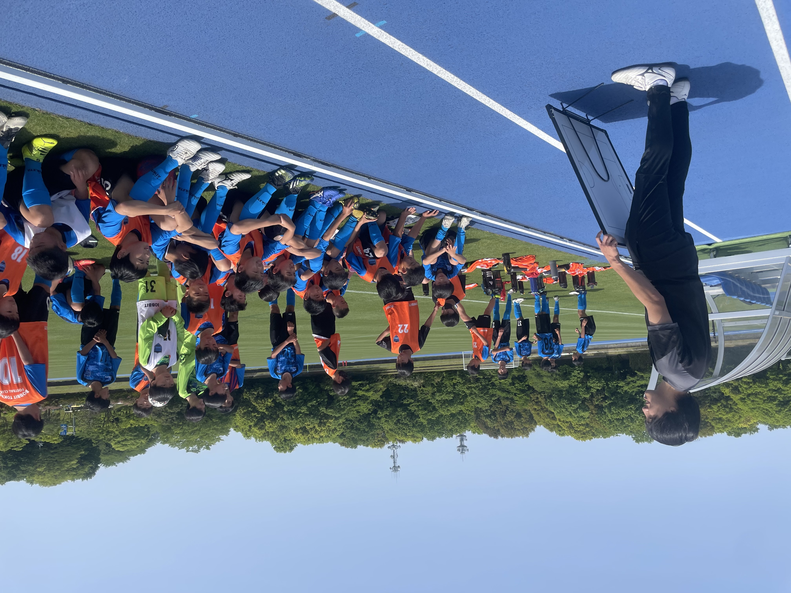

- 
- 
- 


浅賀 宇宙
浅賀宇宙(2001年9月26日)は東京都江東区出身、好きな食べ物３位はオムライス！
自己紹介ランキングスタート！
好きなサッカーリーグ
- Jリーグ
- プレミアリーグ
- ラ・リーガ
- セリエA
- ブンデスリーガ
好きなサッカーチーム
- 横浜Fマリノス
- ガンバ大阪
- マンチェスターシティ
- バルセロナ
- バイエルン
上手いと思うサッカー選手
- リオネル・メッシ
- フレンキー・デ・ヨング
- ケヴィン・デブライネ
- イルカイ・ギュンドアン
- ブルーノフェルナンデス
見てて楽しいサッカー選手
- キリアン・ムバッペ
- ハーランド
- クリスティアーノ・ロナウド
- アダマ・トラオレ
- ジュニオール・サントス
サッカーの魅力
- 勝ち負けに盛り上がれる
- 劇的な展開
- アクロバティックなプレー
- 戦術的な戦い
- 激しい球際の攻防
休みの日の過ごし方
- 勉強する
- 試合を見る
- 映画アニメを見る
- 本を読む
- ゲームをする
好きな食べ物
- 焼肉
- 寿司
- お好み焼き
- オムライス
- グラタン
好きな芸人
- ラバーガール
- しずる
- さらば青春の光
- 東京０３
- インパルス
好きなスポーツ
- サッカー
- フットサル
- バレーボール
- 野球
- 陸上
好きな映画
- きっとうまく行く
- 君の膵臓をたべたい
- 花束みたいな恋をした
- 最強の二人
- 7つの会議
好きなアニメ
- 東京喰種
- サイコパス
- pet
- キングダム
- 東京リベンジャーズ